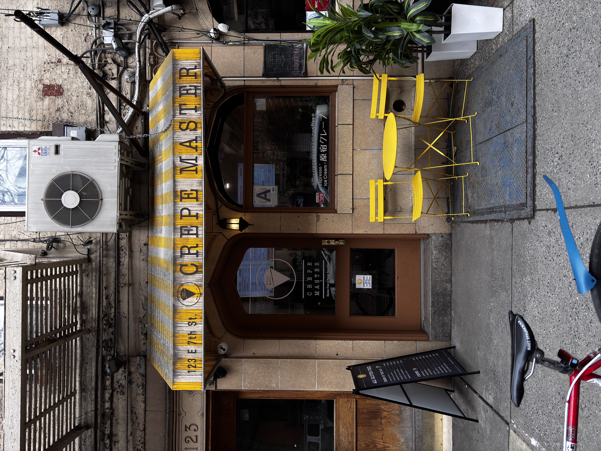

Interview
Elias from Crepe Master in East Village, 2026
A conversation with Elias about his craft, how he came about it, and the multi-faceted design decisions involved with making and selling crepes.

Interviewer
Hello, thank you for your time. Before we begin, could you tell us a little bit about yourself and your background?
Elias
My background is from Greece. I’ve been living 20 years in New York, and I have a long experience with hospitality. And with crepes, about 10 years.
Interviewer
Could you tell us how you got into crepe making?
Elias
I guess the best things happen accidentally. Crepes came suddenly into my life. It was a dream to create something like this, but I didn’t believe in it in the beginning. My wife believed in it and initiated it. She’s Japanese, so we like the crepes in Japan, and we wanted to do something like that in New York. She executed it, and later I pushed to take it to the next level.
Interviewer
You guys went to Japan and saw Harajuku crepe shops?
Elias
Yes. Harajuku is famous in Tokyo. Lots of crepe shops. The crepes are known for beautiful displays, exaggerated but beautiful, lots of colors, and being very yummy.
Interviewer
So you guys started in Harlem and now you’ve ended up here?
Elias
Yes, in a beautiful area of Harlem on the west side. A lot of families and a very supportive neighborhood. After the pandemic, we moved to 7th Street in the East Village.
Interviewer
What are the differences between French and Japanese crepes?
Elias
That's a very good question, thanks for asking. The French one is served on a plate and is folded. The Japanese crepes are rolled, it looks like a cone. We also use gluten free flour, rice flour. I would say the display. It looks different and it's mostly cold, the crepe. It's based on a lot of creams. If you put a lot of creams on the hot crepe, all of the cream would melt. We make the custard cream, we make the whipped yogurt, we can be served on top of the Japanese crepes. So that's why the Japanese crepes have a different presentation, and the ingredients are different, it's more like a pastry.
It's not always gluten free, just because it's Japanese, but in our case it's fully gluten free.